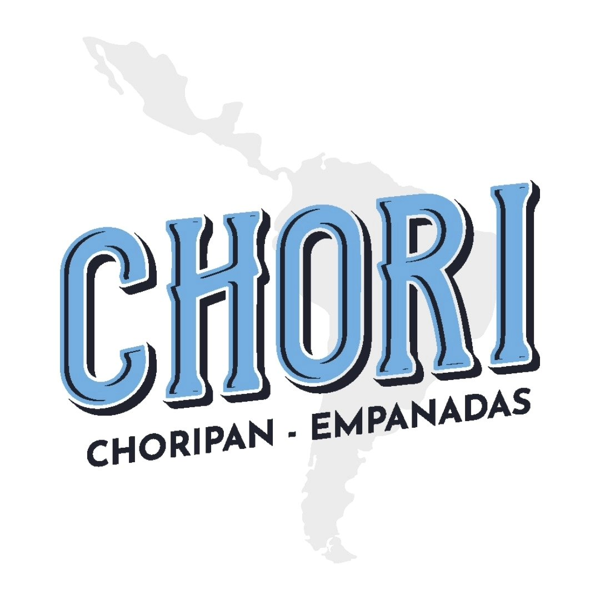

EMPANADAS
Recheios clássicos e combinações especiais, preparados para conquistar na primeira mordida.

PEDIR AGORA →Empanadas artesanais, choripanes e sabores que atravessam fronteiras.
 BUENOS
BUENOS LA CASA DEL CHORI
LA CASA DEL CHORI
No Chori, a gente traz um pedacinho da Argentina para Jundiaí. Sabores autênticos, ingredientes selecionados e uma experiência feita para compartilhar.
Recheios clássicos e combinações especiais, preparados para conquistar na primeira mordida.
O clássico argentino do nosso jeito, cheio de sabor e personalidade.
Para acompanhar, brindar e aproveitar sem pressa.
Av. Carlos Salles Block, 32
Anhangabaú — Jundiaí/SP
Segunda a Quinta - 12h às 21h
Sexta e Sábado - 12h às 22h